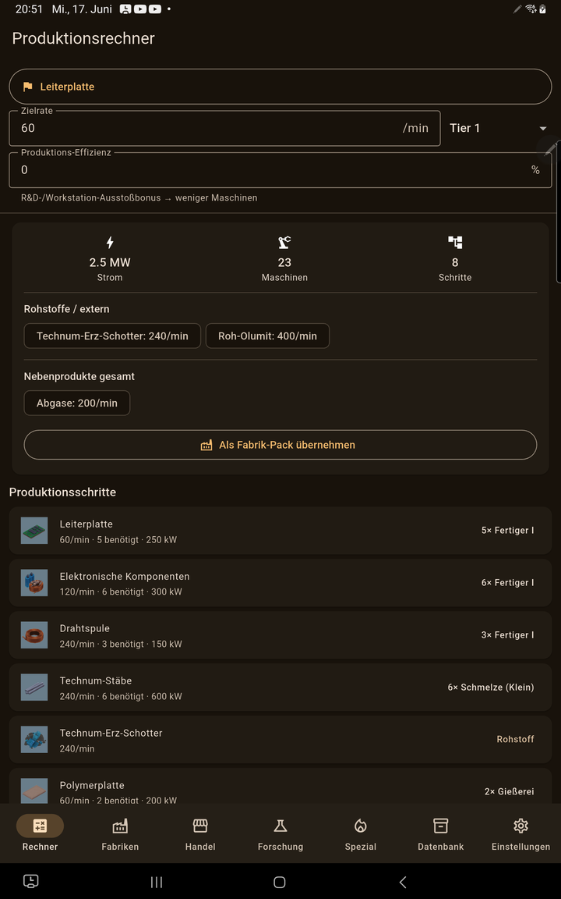
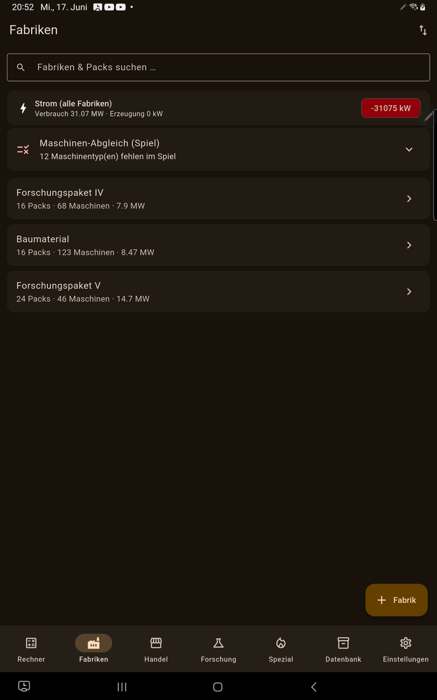
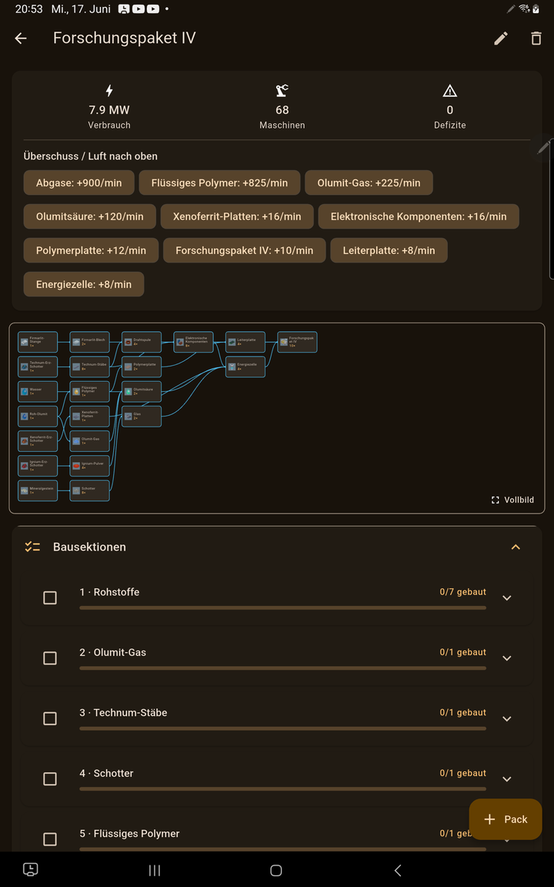
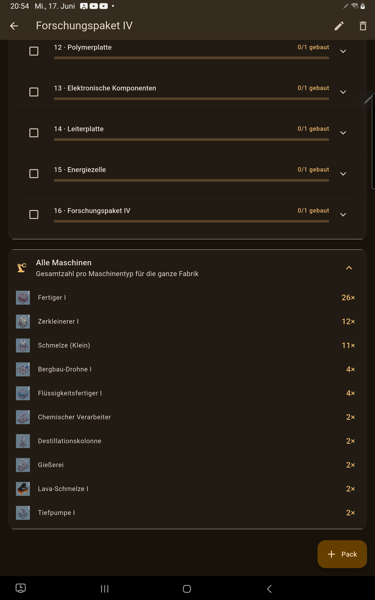
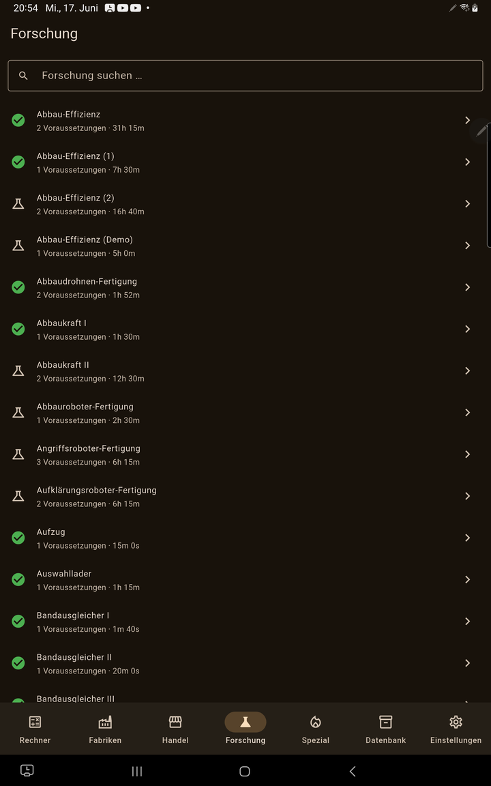
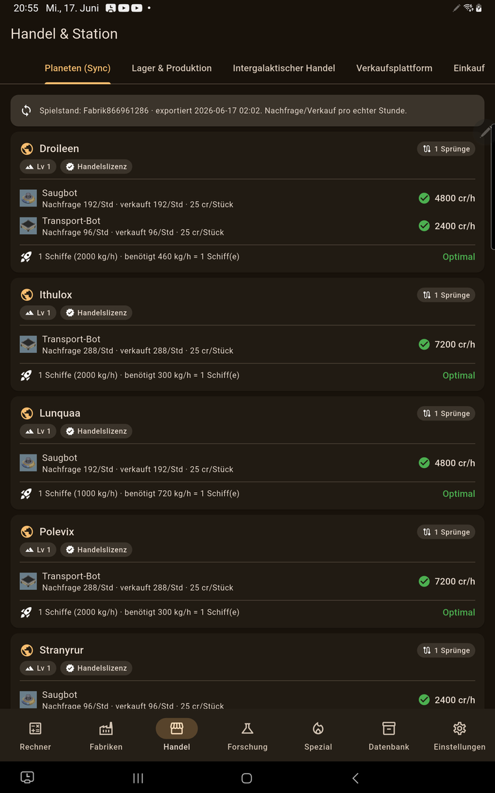

Produktions- & Planungs-Kalkulator für das Spiel FOUNDRY – Produktionsketten, Fabriken, Forschung und Handel auf Handy & Tablet. Production & planning calculator for the game FOUNDRY – production chains, factories, research and trade on your phone & tablet.
In wenigen Minuten einsatzbereit – die App funktioniert komplett offline. Der optionale PC-Mod ist nur nötig, wenn du deinen echten Spielstand übernehmen möchtest. Ready in minutes – the app works fully offline. The optional PC mod is only needed if you want to pull in your real save game.
FoundryCalc kostenlos aus dem Google Play Store laden und öffnen. Get FoundryCalc for free from Google Play and open it.
Ziel-Produkt wählen, Rate eingeben – die App berechnet die ganze Kette und legt daraus Fabriken an. Pick a target product, enter a rate – the app computes the whole chain and builds factories from it.
Den Begleit-Mod auf dem PC abonnieren, um Forschung, Lager und Handel live ins Tablet zu holen. Subscribe to the companion mod on PC to stream research, storage and trade live to your tablet.
Echte Screenshots aus der App. Real screenshots from the app.
Wähle ein Ziel-Produkt und die gewünschte Menge pro Minute. FoundryCalc löst die komplette Produktionskette auf. Choose a target product and the desired amount per minute. FoundryCalc resolves the entire production chain.

Speichere ganze Fabriken aus dem Rechner. Die Übersicht zeigt Gesamt-Strombilanz und gleicht deine geplanten Maschinen mit dem echten Spielstand ab. Save whole factories from the calculator. The overview shows the total power balance and reconciles your planned machines with the real save.

Jede Fabrik wird in geordnete, abhakbare Bausektionen zerlegt – Abschnitt für Abschnitt nachbaubar. Ein Flussdiagramm zeigt die Materialflüsse. Every factory is split into ordered, checkable build sections – buildable step by step. A flow diagram shows the material flows.

Auf einen Blick, wie viele von jedem Maschinentyp du für die ganze Fabrik bauen musst – inklusive der richtigen Förder-Gebäude (Bergbau-Drohnen, Tiefpumpen) im höchsten von dir erforschten Tier. See at a glance how many of each machine type you need to build for the whole factory – including the correct extractors (mining drones, deep pumps) at the highest tier you have researched.

Der komplette Forschungsbaum mit Voraussetzungen und Science-Pack-Bedarf. Mit dem Sync-Mod werden bereits erforschte Technologien markiert. The complete research tree with prerequisites and science-pack demand. With the sync mod, already-researched technologies are marked.

Plane Verkaufsrouten und den Schiffsbedarf pro Planet. Mit dem Sync-Mod werden deine echten Handelslizenzen, Preise und Lagerbestände übernommen. Plan sales routes and the number of ships needed per planet. With the sync mod your real trade licenses, prices and stock are imported.

Ein optionaler, kostenloser Begleit-Mod für FOUNDRY auf dem PC. Er überträgt deinen Spielstand live an die App – damit Rechner, Forschung und Handel mit deinen echten Daten arbeiten. Der Mod ist rein lesend und verändert nichts am Spiel. An optional, free companion mod for FOUNDRY on PC. It streams your save to the app live – so the calculator, research and trade work with your real data. The mod is read-only and changes nothing in the game.
→ Mod im Steam-Workshop öffnen→ Open the mod on Steam Workshop
Live über WLAN: PC und Tablet müssen im selben WLAN sein. In den App-Einstellungen unter „Spiel-Sync" auf das Radar-Symbol tippen – die App findet den PC automatisch (oder gib die PC-IP-Adresse manuell ein). Der Mod stellt die Daten unter Port 8642 bereit; ein Beacon auf Port 8643 dient der automatischen Erkennung. Live over WLAN: PC and tablet must be on the same Wi-Fi. In the app settings under “Game sync” tap the radar icon – the app finds the PC automatically (or enter the PC IP manually). The mod serves the data on port 8642; a beacon on port 8643 is used for auto-discovery.
Per Datei: Der Mod schreibt regelmäßig eine Datei
foundrycalc_sync.json. Diese kannst du in der App über „Datei wählen"
importieren.
Via file: The mod regularly writes a
foundrycalc_sync.json file. You can import it in the app via “Pick file”.
Etwas funktioniert nicht oder ein Wert stimmt nicht? Schick mir eine kurze Meldung – jede Meldung wird mit Zeitstempel gespeichert, damit ich sie der Reihe nach abarbeiten kann. Something not working or a value looks wrong? Send a quick report – each report is stored with a timestamp so I can work through them in order.